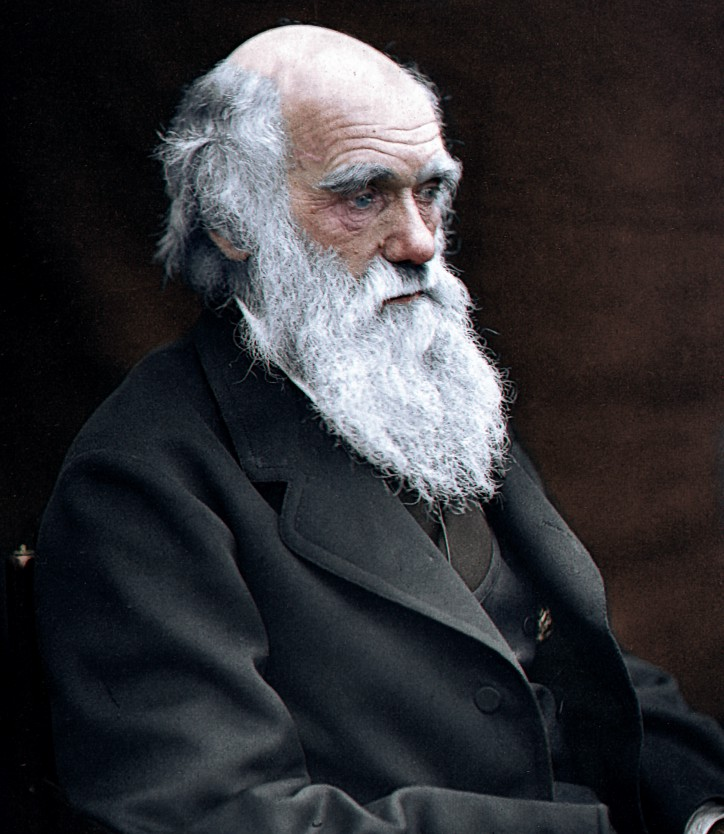

Apresentação
-
Mora em Rio de Janeiro
-
De Jacarepaguá
-
Em um relacionamento sério com
Luize Garcia - Reyspira

Publicações
Filtros
Gerenciar publicações
Visualização em lista
Visualização em grade
Fotos
Ver todas as fotos


Amigos
997 amigos
Ver todos os amigos

Charles Darwin

Carlos Chagas
Marie Curie
Steve Jobs
Bill Gates
Mark Zuckerberg
Viola Davis
Chadwick Boseman
Jordan Peele
Reynaldo Candido
19 de junho ás 22:41
Eu amo uma instituição